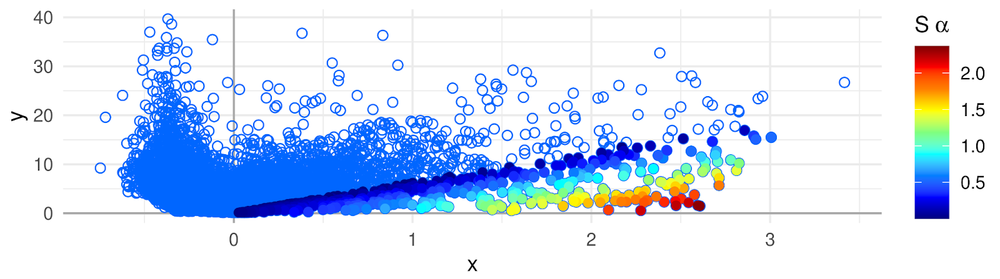

APL is a package developed for computation of Association Plots, a method for visualization and analysis of single cell transcriptomics data. The main focus of APL is the identification of genes characteristic for individual clusters of cells from input data.
When working with APL package please cite:
Association Plots: Visualizing associations in high-dimensional correspondence analysis biplots
Elzbieta Gralinska, Martin Vingron
bioRxiv 2020.10.23.352096; doi: https://doi.org/10.1101/2020.10.23.352096The APL can be installed from GitHub:
library(devtools)
install_github("VingronLab/APL")To additionally build the package vignette, run instead:
install_github("VingronLab/APL", build_vignettes = TRUE, dependencies = TRUE)Building the vignette will however take considerable time.
The vignette can also be found under the link: https://vingronlab.github.io/APL/ (hyperlink in the GitHub repository description).
To install the APL from Bioconductor, run:
if (!requireNamespace("BiocManager", quietly = TRUE))
install.packages("BiocManager")
BiocManager::install("APL")In order to speed up the singular value decomposition, we highly recommend the installation of pytorch. Users can instead also opt to use the slower R native SVD. For this, please set the argument python = FALSE wherever applicable in the package vignette.
library(reticulate)
install_miniconda()
conda_install(envname = "r-reticulate", packages = "numpy")
conda_install(envname = "r-reticulate", packages = "pytorch")Download the appropriate Miniconda installer for your system from the conda website. Follow the installation instructions on their website and make sure the R package reticulate is also installed before proceeding. Once installed, list all available conda environments via conda info --envs
One of the environments should have r-reticulate in its name. Depending on where you installed it and your system, the exact path might be different. Activate the environment and install pytorch into it.
conda activate ~/.local/share/r-miniconda/envs/r-reticulate # change path accordingly.
conda install numpy
conda install pytorch